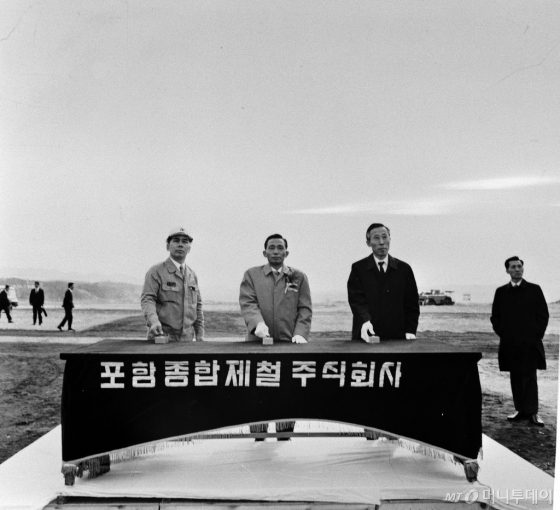

매체 머니투데이등록일 2018-06-04
'우향우 정신' 박태준 포스코 명예회장…"보면 압도된다"
[포스코 창립 50주년]"후세의 경영자들을 위한 살아있는 교본"

박태준 포스코 사장(왼쪽)이 1970년 4월 포항1기 착공식에서 착공버튼을누르고 있다./사진제공=포스코
"선조들의 피값인 대일청구권 자금으로 건설하는 만큼 실패하면 민족사에 씻을 수 없는 죄를 짓는 것이니 ‘우향우’하여 영일만에 빠져 죽어 속죄해야 한다"
창업자인 고(故) 박태준 포스코(POSCO (352,500원
13000 3.8%)) 명예회장은 1970년대 포항제철소 건설 당시 밤낮으로 건설현장을 돌아보며 직원들에게 민족의 숙원사업에 동참한다는 긍지와 사명감을 가질 것을 주문하며 이같이 밝혔다.
'우향우 정신'은 '좋은 철로 나라를 이롭게 한다'는 '제철보국(製鐵報國)'의 정신과 함께 포스코의 창업이념이 됐다.
박 명예회장은 1927년 태어나 남조선경비사관학교(육군사관학교의 전신) 6기를 나왔다. 박 명예회장의 지휘 아래 포항제철소는 1970년 4월 영일만에서 건설의 첫 삽을 뜨고 4번의 확장사업 끝에 1973년 5월 조강 연산 910만톤 규모로 완공됐다.
박 명예회장이 남긴 발자취는 8년 연속 '세계에서 가장 경쟁력있는 철강사'인 지금의 포스코를 있게 했다. 삼성 창업주 고(故) 이병철 삼성그룹 회장은 "박태준은 후세의 경영자들을 위한 살아있는 교본"이라고 말했을 정도다.
박 명예회장은 제철소 건설을 위해 모든 방법을 동원했다. 1970년 열연공장 건설 공사 기간을 단축하기 위해 '열연 비상사태'를 선포한 적도 있다. 행정·사무직을 포함한 모든 임직원을 공사현장에 투입시켜 103만톤 규모의 1기 설비를 예정보다 1개월 앞당긴 39개월 만에 준공했다.
하지만 박 명예회장이 단순히 '빠른 공사'만 추구한 것은 아니었다. 그는 1977년 발전 송풍 설비 구조물 공사가 80% 정도 진행된 상태였지만 구조물 불량을 발견했다. 발견 다음날 "부실공사를 절대 허용하지 않겠다"며 구조물을 모두 폭파시켰다.
박 명예회장은 포스코를 외압으로부터도 지켜냈다. 포스코는 제철소 1기 착공 후 정치자금 지원을 요구 받았는데, 박 명예회장은 문제를 해결하기 위해 당시 박정희 대통령에게 이 사실을 알렸다. 그는 박 대통령이 보고 받은 메모지에 서명을 한 일명 '종이마패'를 간직하며 외압을 이겨냈다.
권오준 포스코 회장은 '우향우 정신'의 박 명예회장을 생각하며 "입사하자마자 인사를 했다"며 "그 당시 (박 명예회장을) 보면 압도된다"고 밝혔다. 권 회장은 또 박 명예회장이 1992년 회장직에서 물러난 이후에도 얘기를 나눈 바 있다. 그는 "2000년대 초 유럽사무소 근무 시절 박 명예회장이 유럽에 왔다"며 "소박하게 얘기를 했다"고 말했다.